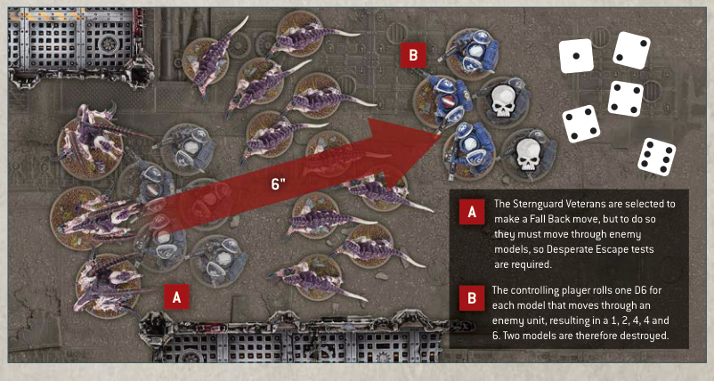

When a unit Advances, make an Advance roll for that unit by rolling one D6. Add the result in inches to the Move characteristic of each model in that unit until the end of the phase. Each model in that unit can then make an Advance move by moving a distance in inches less than or equal to this total, but no model can be moved within Engagement Range of enemy models. A unit cannot shoot or declare a charge in the same turn that it Advanced.
■Advance Move: Models move up to M+D6".
■ Cannot move within Engagement Range of any enemy models.
■ Units that Advance cannot shoot or charge this turn.
When a unit Falls Back, each model in that unit can make a Fall Back move by moving a distance in inches less than or equal to its Move characteristic, and when doing so you can move it within Engagement Range of enemy models, provided it does not end that move within Engagement Range of any enemy models - if this is not possible, that unit cannot Fall Back.
A unit cannot shoot or declare a charge in the same turn that it Fell Back.
Unlike when making other types of move, models can move over enemy models when making a Fall Back move as if those enemy models were not there, but you must take a Desperate Escape test for each model that will do so (excluding models that are Titanic or can Fly) before any models in that unit are moved. In addition, if a unit is Battle-shocked when it is selected to Fall Back, you must take a Desperate Escape test for every model in that unit before any are moved.
Each time you take a Desperate Escape test for a model, roll one D6. For each roll of 1-2, one model from the unit that is Falling Back is destroyed (selected by you). The same model can only ever trigger one Desperate Escape test per phase.
■Fall Back Move: Models move up to M".
■ Units that Fall Back cannot shoot or declare a charge in the same turn.
■ Models can move over enemy models when Falling Back, but you must take Desperate Escape tests for them before they do so (excluding models that are Titanic or can Fly).
■ If a Battle-shocked unit is selected to Fall Back, take a Desperate Escape test for every model in that unit.
■ Desperate Escape Test: Roll one D6. On a 1-2, one model from that unit is destroyed.

A The Sternguard Veterans are selected to make a Fall Back move, but to do so they must move through enemy models, so Desperate Escape tests are required.
B The controlling player rolls one D6 for each model that moves through an enemy unit, resulting in a 1, 2, 4, 4 and 6. Two models are therefore destroyed.